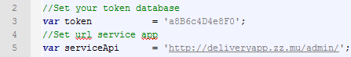
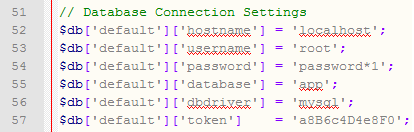
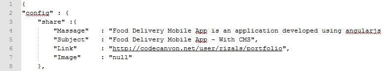
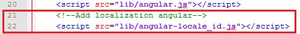

Created: 04/09/2015
By: Rizal Saleh
Email: rizal.saleh1@gmail.com
Thank you for purchasing my app. If you have any questions that are beyond the scope of this help file, please feel free to email via my user page contact form here. Thanks so much!
Food Delivery Mobile App is an application developed using angularjs for maximum performance, with this application you can develop food ordering application via a smart phone so that further maximize the culinary business services.
Before we start, lets take a look on the folder structure of the app. All app files are placed in the FOOD_DELIVERY_MOBILE_APP folder. The FOOD_DELIVERY_MOBILE_APP folder consists of 4 more folders for diferent types of app assets:
1. Server Requirements (Admin Panel) - top
2. Upload Files - top
3. Configuration Files - top
a). Front End
Open app.js file from folder application/js and edit these values (this picture is sample):

For line 3 you can change same with token in your admin setting and for line 5 change this with your url path admin.
b). Back End
Open database.php file from folder application/config and edit these values :

Change this with your database settings (host, user, password, database name, database driver, token), Default admin login use user : (admin) and password : (admin).
4. Database Setup - top
5. Change language of the application - top
Open file en_US.json in folder application/l10n you change this file for edit language.
6. Change (Share App) content - top
Open file en_US.json in folder application/l10n find line 2 you change this file for edit share app content.

7. Change localization - top
To change the format of the localization you can add angular-locale files that can be downloaded at the following link : Angular locale files
save the file in the directory app/lib and add the files that have been downloaded earlier in the index.html file in the application folder.
sample picture use indonesia localization format :

This section tells you all you need to know to set up your development environment to support each platform: where to obtain the SDK, how to set up device emulators, how to connect devices for direct testing, and managing signing key requirements.
I've used the following scripts :
Once again, thank you so much for purchasing this app. As I said at the beginning, I'd be glad to help you if you have any questions relating to this app. No guarantees, but I'll do my best to assist. If you have a more general question relating to the app on Codecanyon, you might consider visiting the forums and asking your question in the "Item Discussion" section.
Rizal Saleh